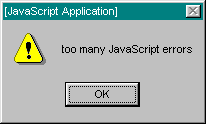
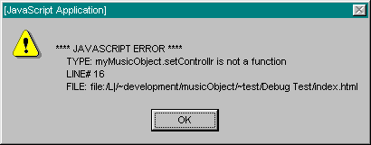

|
| Contents | |
| Bug-watching |
Debugging is an integral part of getting stuff to work. It seldom happens that one writes code to then discover that it miraculously works right off the bat - without any further caoxing. JavaScript provides a very loose scipting environment where programmers can be carefree and intuitive, without the usual pressures of long compile times associated with languages such as C++. Because of this, code written in JavaScript often tends to evolve in a tweak-and-preview fashion, where small incremental (and often experimental) changes are made very frequently, with just as abundant reloads in the browser. Web designers who are doing JavaScript programming may not have the same amount of time to carefully plan and flowchart a program before writing the code as a C++ programmer might have. So, there is great potential for bugs in the course of developing a JavaScript application, and it is no different with interactive Beatnik authoring done in JavaScript.

Dealing with this infamous Navigator 3.x to 4.0x error condition is somewhat of a rite of passage for any respectable JavaScript programmer. It can often happen that one simple error in some JavaScript code can cause the code to trip over itself and set in motion a cataclysmic chain of JavaScript error messages. The system is engulfed in a proliferation of JavaScript error alert dialogs, and Netscape Navigator eventually gives up the fight with the message "Too Many JavaScript Errors". The user is left with the unenviable task of cleaning up the shrapnel - somewhat like wiping off the sides of a microwave oven after you exploded a sausage in it by heating it up too much.
All in all, this is not quite the kind of experience that you want a visitor to your Web site to have - not under any circumstances. Even if your code is somehow to blame for the misdeed, you still do not want users being so inconvenienced. Very often it is possible to set off such disasters simply by clicking on the stop button while a page is still loading in - not an unreasonable thing to expect from a Web surfer. If that page uses JavaScript and the JavaScript does not load completely, the user can be left with half of a JavaScript applet, with some code executing and trying to make references to functions or variables that would have been defined had the rest of the code loaded in - a clear recipe for disaster. And be quite sure that if there is any hint of a JavaScript error, the Web surfer will invariably blame the Web page author - even if the issue is, indeed, to blame on the browser.
The way to get around the problem of JavaScript error alerts is simply to use protection. JavaScript offers the ability to set custom handlers for error events that occur inside a document. If you register your own error handler, then, instead of the browser being the first to respond to the error, your handler function will be notified first. The function can deal with the error message in any way it sees fit, and then optionally pass the error message on so that the browser can respond to it too. This makes it possible to intercept JavaScript error messages and override the default behavior of coughing up tasteless error dialog boxes for the end user to contend with.
The JavaScript module Music Object Extension - Debug registers its own error handler for any sonified document that sources in the "music-object-x-debug.js" file. This error handler tries to deal with JavaScript errors in a more graceful manner, and it is customizable so that authors can decide the behavior appropriate to the Web site's development phase. For instance, when fully embroiled in writing and developing the code, it may indeed be appropriate to pop up alert boxes when errors occur. Then, when the site has been published but is still being tested against the full brunt of heavy traffic, it may only be appropriate to send error messages to the status bar or the Java console. Finally, when the author is completely and utterly satisfied that there is nothing more that can be done for the site, and it's as good and as reliable as it's ever going to get, it may then be appropriate to completely suppress the occasional error messages that will invariably still occur.
| Using Music Object Extension - Debug |
Starting from Music Object version 3.2.0, the debugging features of the Music Object API are provided in the form of the optional module Music Object Extension - Debug. In order to make use of the debugging features, you will need to source in the "music-object-x-debug.js" file in your sonified pages.
IMPORTANT : If you update the "music-object.js" file being used by content that was using the debugging features of an earlier version of Music Object, then you should consult the section Migrating Content from Music Object 3.1.x to 3.2.x to see how to update your content correctly.
You should always source in the "music-object-x-debug.js" file after first sourcing in the "music-object.js" file, as shown in the example below...
<SCRIPT SRC="music-object.js"></SCRIPT> <SCRIPT SRC="music-object-x-debug.js"></SCRIPT> <!-- The rest of your document follows.... --> |
| Customizable Properties |
The "Music Object Extension - Debug" module offers authors three boolean static properties with which to customize the way error messages are handled:
We expect that many authors who use the "Music Object Extension - Debug" module may not bother to modify the debug properties, so we tried to choose default settings that most authors can live with. By completely suppressing all error messages, it would become very hard for authors to identify why a page is not behaving as intended. On the other hand, by popping up dialog boxes for each error that is encountered, the user's experience could be totally destroyed. The default settings we chose try to find the middle ground between the author's need for feedback when things aren't working, and the need of the end user to have a half decent experience while visiting a Web site - even if some of the page's intended functionality is absent because of errors in the code which the visitor would not understand or be able to appreciate, anyway.
So, unless the default debug settings are overridden by the author, all error messages will be sent to the Java console and the status bar, but no error dialog boxes will open up. An author can easily tell if something is failing in the page's JavaScript code by looking at the status bar, which will always show the most recent error message that has occurred. The author can then optionally open up the Java console (if supported) to see the full logging of error messages that were encountered on the page.
When the "music-object-x-debug.js" first loads in, it defines and sets default values for the Music.debugToAlert, Music.debugToJavaConsole, and Music.debugToStatus properties. These default vallues can easily be overridden by setting new values for the debug properties after the "music-object-x-debug.js" file has been sourced in. The code segment below serves as a good template for this:
<SCRIPT SRC="music-object.js"></SCRIPT> <SCRIPT SRC="music-object-x-debug.js"></SCRIPT> <SCRIPT LANGUAGE=JavaScript><!-- // Music.debugToJavaConsole = [true , false]; Music.debugToAlert = [true , false]; Music.debugToStatus = [true , false]; // --></SCRIPT> <!-- The rest of your document follows.... --> |
The separate SCRIPT block, following the SCRIPT tag that sources in the "music-object-x-debug.js" file, contains three statements that set the debugging properties. Specifying a true value for a property enables that error message output behavior. The different forms of error message output are not mutually exclusive, so you can enable any or all of the output styles at once.
| Showing an Alert Box |
An alert box has got to be the most intrusive way to be informed of errors that occur. In a sense, this makes an alert box useful when you are first starting to develop code. It's a very "in your face" kind of error reporting which leaves little chance of you being unaware of failures in your code. And one good thing about the "Music Object Extension - Debug" module's alert box error reporting, as compared to the standard behavior inside Netscape Navigator, is that the JavaScript code cannot continue executing until you have closed the error dialog. This prevents the rather obnoxious behavior of "too many JavaScript errors" dialog boxes stacking on top of each other.
It is also not possible with Navigator 3.x-and-4.0x's default error dialogs to hit the "Enter" key to dismiss the dialog - you actually have to click on the "OK" button. This was even worse in Navigator 3.x, where you would often have to scroll in the error dialog window just to find the "OK" button so you could close the window. Try doing this for a dozen or so error dialogs and you'll understand and appreciate the benefits of the "Music Object Extension - Debug" module's error reporting scheme.

If you wish your error messages to only be reported using alert boxes, you could use the following code in your page:
| |
<SCRIPT SRC="music-object.js"></SCRIPT>
<SCRIPT SRC="music-object-x-debug.js"></SCRIPT>
<SCRIPT LANGUAGE=JavaScript><!-- //
Music.debugToJavaConsole = false;
Music.debugToAlert = true;
Music.debugToStatus = false;
// --></SCRIPT>
<!-- The rest of your document follows.... -->
|
Be sure to specify relative paths to the "music-object.js" and "music-object-x-debug.js" files that are appropriate to the HTML page you are authoring. In this example, we are assuming that both files exist within the same folder as the HTML page.
| Using the Java Console |
The Java console offers you a way to log JavaScript errors that occur within a page. Netscape Navigator allows JavaScript to send output to the Java console, and the "Music Object Extension - Debug" module's error reporting scheme makes use of this ability when you have the Music.debugToJavaConsole property set to true.
Errors are shown in the Java console in exactly the same way as they would appear in the alert box if the Music.debugToAlert property is set to true. Each error in the Java console is headed with

When you first launch the browser, the Java console will not be shown. To show it, choose one of the following options based upon the browser version you are using...
Be aware, that while you are using the Java console and have it open, it may go in the background if you select a different browser window and reload the page that you are testing. You may, therefore, wish to size the Java console window and the browser window in such a way that you can place them alongside each other. That way, they won't compete with each other to be in the foreground. Then, once you have done testing, you can close the Java console and resize the browser window to an optimal size for viewing your Web page.
Also, the Java console will not automatically clear each time you reload a page, so it is possible for the console to build up an accumulation of JavaScript error messages over the course of many page reloads. If you need to be absolutely certain that the errors you see in the console occurred only in the most recent reload of the page, simply clear the Java console content manually before you reload by using the console's "Clear" button.
If you wish your error messages to only be reported to the Java console, you could use the following code in your page:
| |
<SCRIPT SRC="music-object.js"></SCRIPT>
<SCRIPT SRC="music-object-x-debug.js"></SCRIPT>
<SCRIPT LANGUAGE=JavaScript><!-- //
Music.debugToJavaConsole = true;
Music.debugToAlert = false;
Music.debugToStatus = false;
// --></SCRIPT>
<!-- The rest of your document follows.... -->
|
Be sure to specify relative paths to the "music-object.js" and "music-object-x-debug.js" files that are appropriate to the HTML page you are authoring. In this example, we are assuming that both files exist within the same folder as the HTML page.
| Using the Status Bar |
When you have error messages being reported in alert boxes, it's always pretty obvious when something is going wrong in your code. But, when you're logging errors to the Java console instead, then it is easy for error messages to go by unnoticed - especially if the Java console is concealed behind the browser window. So, if alert boxes are too intrusive for you, but you still wish to have some indication of errors, you can use the status bar option. When the Music.debugToStatus property is set to true, all JavaScript error messages will be output to the browser window's status bar. The "Music Object Extension - Debug" module's error handler actually sets the default status bar message for the browser window.

If you wish your error messages to only be reported to the browser window's status bar, you could use the following code in your page:
| |
<SCRIPT SRC="music-object.js"></SCRIPT>
<SCRIPT SRC="music-object-x-debug.js"></SCRIPT>
<SCRIPT LANGUAGE=JavaScript><!-- //
Music.debugToJavaConsole = false;
Music.debugToAlert = false;
Music.debugToStatus = true;
// --></SCRIPT>
<!-- The rest of your document follows.... -->
|
Be sure to specify relative paths to the "music-object.js" and "music-object-x-debug.js" files that are appropriate to the HTML page you are authoring. In this example, we are assuming that both files exist within the same folder as the HTML page.
| Total Onslaught |
Wanna go the whole hog? Prepare for a total onslaught of error reporting. As was mentioned earlier, the different forms of error message reporting are not mutually exclusive. You can have any or all enabled at the same time. Feeling ultra paranoid? Not prepared to let a single bug slip by, as if your life depended on it? Then this one's for you.
Error messages will be reported to the Java console, the browser window's status bar, and using alert boxes if you use the following code in your page:
| |
<SCRIPT SRC="music-object.js"></SCRIPT>
<SCRIPT SRC="music-object-x-debug.js"></SCRIPT>
<SCRIPT LANGUAGE=JavaScript><!-- //
Music.debugToJavaConsole = true;
Music.debugToAlert = true;
Music.debugToStatus = true;
// --></SCRIPT>
<!-- The rest of your document follows.... -->
|
Be sure to specify relative paths to the "music-object.js" and "music-object-x-debug.js" files that are appropriate to the HTML page you are authoring. In this example, we are assuming that both files exist within the same folder as the HTML page.
| Sweep it All Under the Rug |
OK, so you're over it, right? You've debugged just about as much as any mortal ever could, and then some. The code's about as good as it's gonna get. Anything that goes wrong now gets blamed on the user.
Resized the window??? What do you mean, resized the window!!! Don't you know you're not supposed to do that while a page is loading! Hit the stop button?? And expected the page to still work? Are you out of your mind!!!
So the user is going to do something obnoxious and then blame you when the page doesn't function properly. Nothing new. And Lord have mercy if the user gets hold of a JavaScript error alert message. Your fate is sealed. The evidence of your crimes as a failed JavaScript programmer is in their grubby paws and is being copied-and-pasted into a nasty e-mail to the Webmaster as we speak. You don't want this to happen to you, do you?
So, to completely suppress all error message reporting, use the following code in your page:
| |
<SCRIPT SRC="music-object.js"></SCRIPT>
<SCRIPT SRC="music-object-x-debug.js"></SCRIPT>
<SCRIPT LANGUAGE=JavaScript><!-- //
Music.debugToJavaConsole = false;
Music.debugToAlert = false;
Music.debugToStatus = false;
// --></SCRIPT>
<!-- The rest of your document follows.... -->
|
Be sure to specify relative paths to the "music-object.js" and "music-object-x-debug.js" files that are appropriate to the HTML page you are authoring. In this example, we are assuming that both files exist within the same folder as the HTML page.
| Sharing Debug Settings |
Up until now, we've been looking at examples where we are setting the "Music Object Extension - Debug" module's debug properties by placing JavaScript statements in the page to override the default settings that are defined in the "music-object-x-debug.js" file. This, of course, can become cumbersome if you are authoring many sonified pages on a Web site. Imagine that you decide you'd like to change the error reporting scheme for your Web site, so that you can then do another phase of debugging. Should be as simple as switching a switch, but it will actually require you to do one or more global search-and-replaces on all the HTML pages of your Web site.
The way around this problem is to create a shared file which defines your error reporting preferences. This file can then be sourced into any page that is using the "Music Object Extension - Debug" module. Changing the behavior for the entire Web site will then, truly, be as simple as switching a switch. Edit the shared file, save, and presto!
As an example, the shared file could be called "debug-prefs.js" and could be stored in the same directory as the "music-object.js" and "music-object-x-debug.js" files. If we only wanted error reporting to the Java console, then the preferences file would look as follows:
| |
Music.debugToJavaConsole = true;
Music.debugToAlert = false;
Music.debugToStatus = false;
|
Then, any HTML page that uses the "Music Object Extension - Debug" module could additionally source in the "debug-prefs.js" file as follows:
| |
<SCRIPT SRC="music-object.js"></SCRIPT> <SCRIPT SRC="music-object-x-debug.js"></SCRIPT> <SCRIPT SRC="debug-prefs.js"></SCRIPT> <!-- The rest of your document follows.... --> |
Be sure to specify relative paths to the "music-object.js", "music-object-x-debug.js", and "debug-prefs.js" files that are appropriate to the HTML page you are authoring. In this example, we are assuming that all files exist within the same folder as the HTML page.
Now, I know what might be going through the minds of some of the JavaScript hackers reading this (you know who you are). "Simple, I'll just edit the "music-object-x-debug.js" file and set the preferences there to the way I like it." WRONG! Not a good thing to do. It'll come back to haunt you. Even worse, I'll come back to haunt you - PERSONALLY!